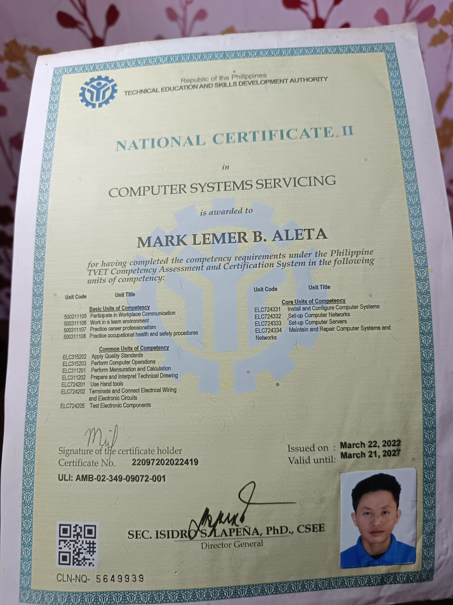
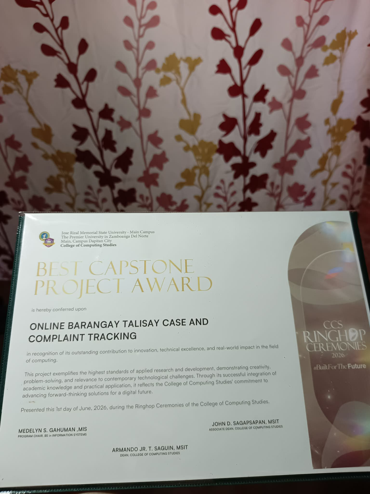
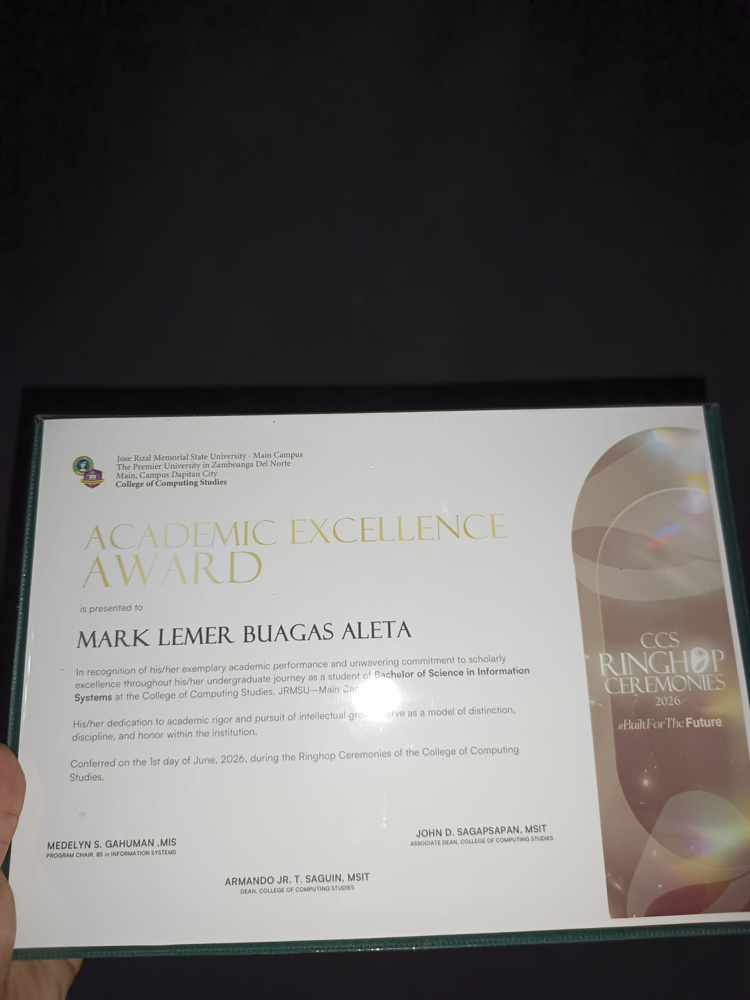
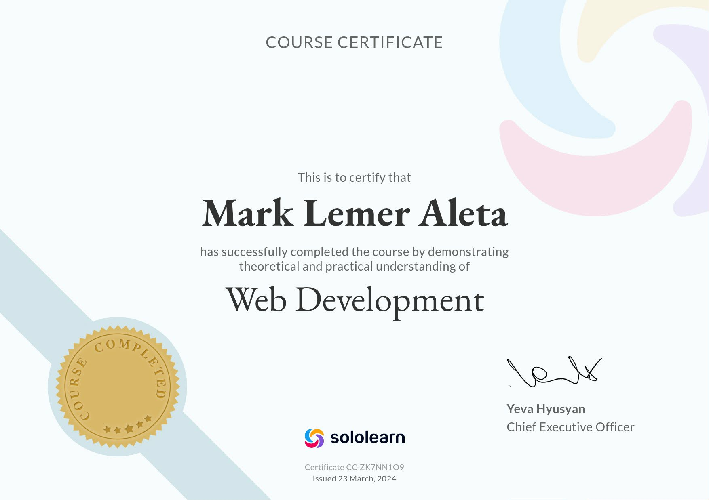
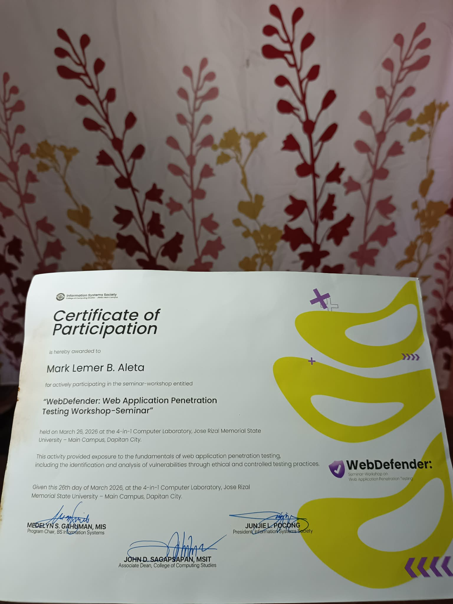

Programmer/Developer at Spawn Internet ISP and BSIS graduate of Jose Rizal Memorial State University — NC II–certified in Computer System Servicing. Based in Dipolog City, I build web-based systems like WiFi vendo management platforms, integrate them with OpenWrt routers, and keep networks and documentation running clean.
I earned my Bachelor of Science in Information Systems from Jose Rizal Memorial State University, Main Campus — Class of 2026. My training sits at the intersection of technology and organization: understanding how data, people, and process fit together, from data flow diagrams to working systems.
I'm from Barangay Punta, Dipolog City, Zamboanga del Norte. Today I work as a Programmer/Developer at Spawn Internet ISP, where I build and maintain a WiFi vendo management system — responsive interfaces in HTML, CSS, and JavaScript, databases for customers, vouchers, and transactions, and OpenWrt router integration for automated internet access. My capstone, an online case and complaint tracking system, won Best Capstone Project at JRMSU's CCS Ringhop Ceremonies.
I develop and maintain the company's WiFi Vendo Management System — the web platform behind its internet vending operations — from responsive front-end to database to the routers themselves.
Building responsive, web-based systems in production — from the vendo management platform I develop daily to database-backed applications.
Configuring OpenWrt routers and small networks — including automated internet access management for WiFi vending — so everything stays reliably connected.
NC II–certified in Computer System Servicing — installing software, diagnosing and troubleshooting systems, and supporting the people who use them.
Information systems thinking applied to everyday operations — mapping processes with data flow diagrams, handling data, and producing clean documents.
Responsive, database-backed web systems built with HTML, CSS, and JavaScript — like the WiFi vendo management platform I develop and maintain in production, or a case and complaint tracking system for a barangay.
Setting up OpenWrt routers, Wi-Fi, and small office or home networks — from fresh installs and access automation to fixing connections that keep dropping.
Software installation, system diagnosis, and repair for desktops and laptops — backed by a TESDA Computer System Servicing NC II certification.
Clean, well-structured documents, spreadsheets, and presentations in Word, Excel, and PowerPoint — plus careful data handling and encoding.
Four years of grounding in systems analysis and design, data flow diagramming, data handling, and information systems development — carried from concept to working output.
Junior & Senior High School Graduate
Elementary Graduate
National Certificate II · View certificate ↓

TESDA competency certification covering computer system installation and configuration, network and server setup, and maintenance and repair.

Conferred on “Online Barangay Talisay Case and Complaint Tracking” for outstanding innovation, technical excellence, and real-world impact in computing.

In recognition of exemplary academic performance and commitment to scholarly excellence throughout the BS Information Systems program.

Completed Sololearn's Web Development course, demonstrating theoretical and practical understanding of HTML, CSS, and JavaScript for building modern websites.

Workshop-seminar on the fundamentals of web application penetration testing: identifying and analyzing vulnerabilities through ethical, controlled practice.
Open to opportunities in web and system development, information systems, technical support, and networking — and ready to help your systems run efficiently.
aletamarklemer13@gmail.com📞 0908 252 1432 Barangay Punta · Dipolog City · Zamboanga del Norte